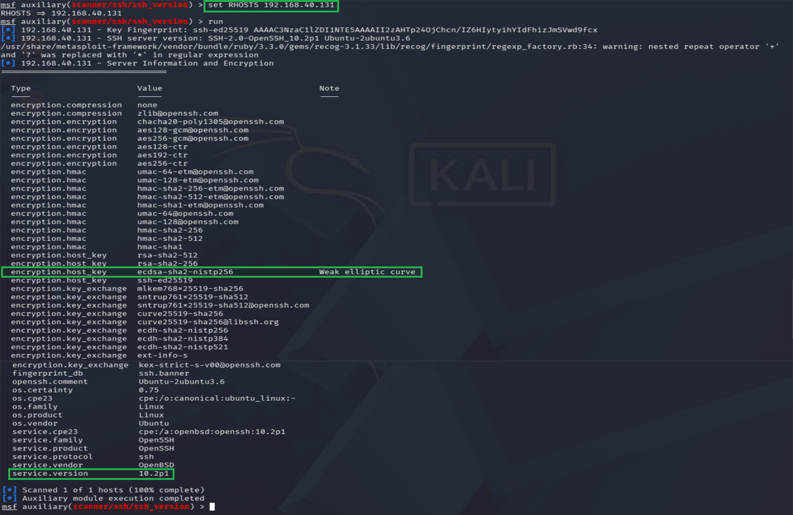

In professional vulnerability management, discovering open ports is merely the staging step. An analyst must run deep protocol inquiries to verify whether active encryption ciphers comply with global industry standards such as PCI-DSS or NIST boundaries. This engagement demonstrates framework initialization, auxiliary module targeting, cryptographic cipher suite auditing, and the identification of weak compliance algorithms — all without triggering a single destructive exploit.
Every action in this engagement is read-only. The auxiliary module queries service banners and negotiated cipher parameters; it does not attempt authentication, exploitation, or state modification on the target.
Framework Initialization & Module Configuration
The Metasploit console requires a backing datastore to track hosts, services, and findings across a session. I initialized the localized PostgreSQL vulnerability tracking database and launched the master console interface directly from the terminal:
sudo msfdb init && msfconsoleRather than reaching for an exploit module, I deliberately selected an official non-destructive auxiliary scanning module to interrogate the server's remote administration handshake rules. Auxiliary modules gather intelligence; they do not weaponize it.
msf6 > use auxiliary/scanner/ssh/ssh_version
msf6 auxiliary(scanner/ssh/ssh_version) > set RHOSTS 192.168.40.131Active Cipher Interrogation & Cryptographic Auditing
Upon executing the module pass, the scanning engine transmitted targeted protocol description queries across the virtual network segment, forcing the destination interface to dump its raw encryption matrix and metadata attributes directly into the framework ledger.
- Full-stack cipher extraction. The auxiliary module compiled a comprehensive list of every enabled cryptographic primitive, mapping the precise encryption daemons, Message Authentication Codes (HMACs), and key exchange parameters handled by the target operating system.
- Cryptographic vulnerability discovered. The audit exposed a critical compliance gap within the host configuration fields, raising an explicit warning signature on the negotiated host-key curve.
ecdsa-sha2-nistp256 — weak elliptic curve
The target advertises a NIST P-256 host key as a valid negotiation option. Under current security benchmarks this curve is considered susceptible to state-level mathematical degradation and side-channel parsing attacks.
Forensic Verification Results
The framework mapped the structural service architecture of the target instance with 100% precision. Two conclusions follow directly from the telemetry:
-
Protocol version validated. Confirmed the target is enforcing
SSH-2.0— old, vulnerable legacy SSHv1 connections are locked out at the protocol level. This is a correct baseline configuration. -
Compliance gap identified. The weak elliptic curve
(
nistp256) exposure flags an active deviation from hardened deployment standards. Left unaddressed, it widens the acceptable attack surface for a sufficiently resourced adversary.

Closing the Attack Vector
To remove the weak curve from the negotiation table, the server's central configuration file must
be edited to explicitly strip out the ecdsa-sha2-nistp256 key parameters. This forces
the host to exclusively negotiate hard, high-entropy alternatives before entering production
deployment.
# Restrict host key algorithms to hardened curves only
HostKeyAlgorithms ssh-ed25519,rsa-sha2-512
# Explicitly disable the weak P-256 curve
PubkeyAcceptedAlgorithms -ecdsa-sha2-nistp256
After applying the change, reload the SSH daemon and re-run the auxiliary module. A clean pass
should no longer surface ecdsa-sha2-nistp256 in the advertised host-key set — the
finding is only closed when the telemetry confirms it.
Security & Data Privacy Note
Hardware MAC layer strings, session process identifiers, and localized administrative user tags have been purposefully filtered within the telemetry presentation logs to maintain strict network anonymity.